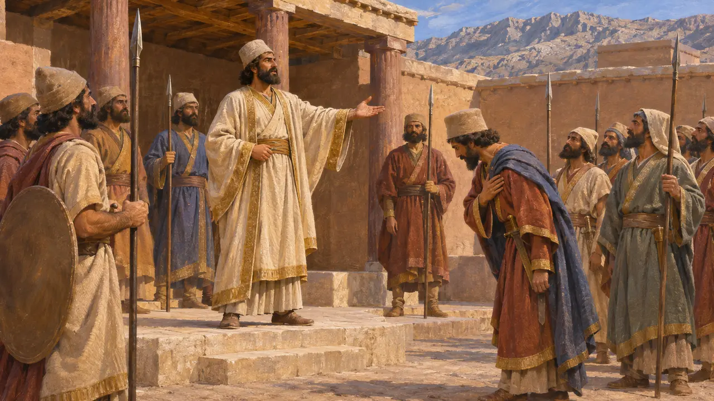
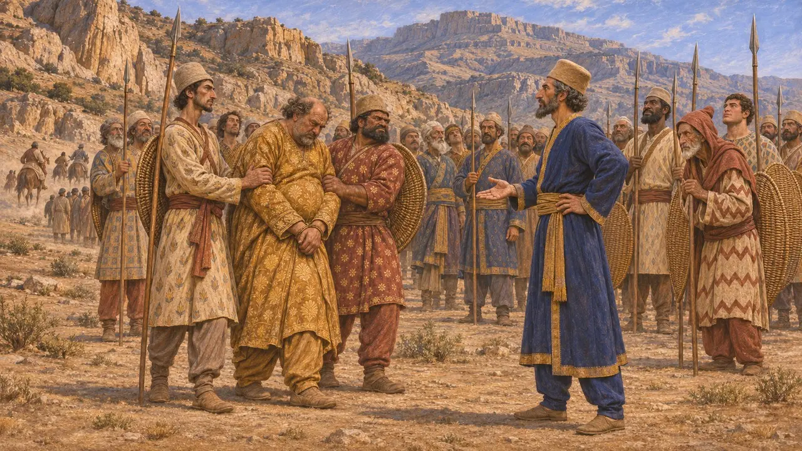
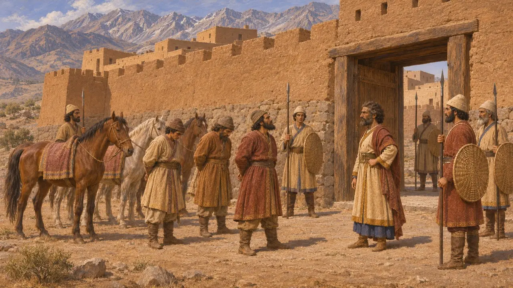
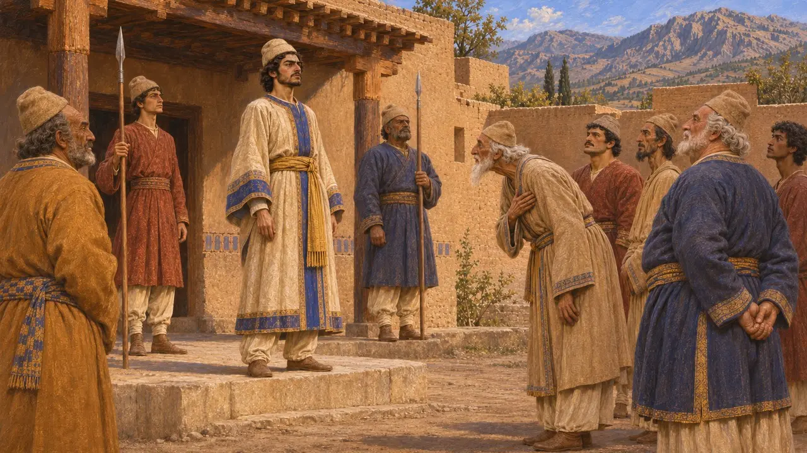
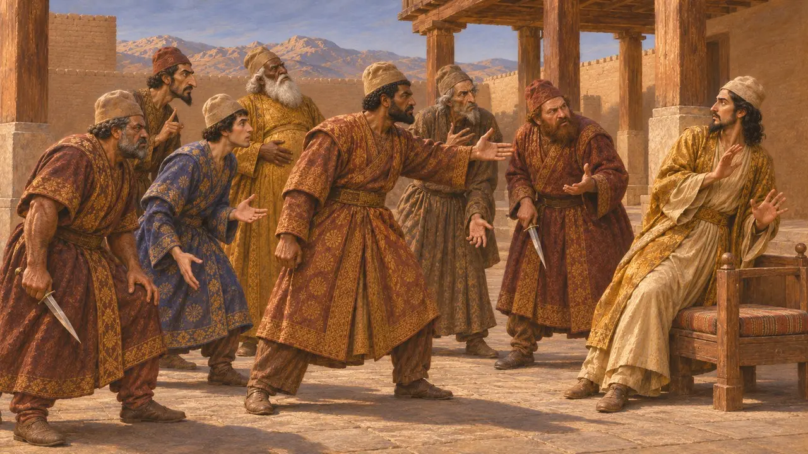

Encyclopedia › Battles and events

The revolt of Vahyazdata
A rising in Persis by a second claimant to the name of Bardiya, 522-521 BCE
In the game: Level 3: The Lie, Level 4: The Terrace
Vahyazdata, a Persian of the town of Tarava, claimed to be Bardiya, son of Cyrus, after Darius had killed the man he called Gaumata. He won over the troops of the palace and sent an army east into Arachosia. Darius's commanders defeated both efforts, and the revolt suggests that resistance to Darius ran deep in the Persian homeland itself.
In the game: The game's Chronicle tells the revolt in the terms of the Behistun inscription, from Vahyazdata's claim at Tarava to his impalement at Uvadaicaya. Calling him a 'second false Bardiya' repeats Darius's own verdict, which no independent source can test.

A second Bardiya in Persis
In the recordDarius says that a man named Vahyazdata lived in Tarava, in the district of Yautiya in Persis. He rose up and declared himself Bardiya, son of Cyrus. The people in the palace went over to him. The text describes them as troops who had earlier come from a place or source it calls Yada, a phrase whose meaning is uncertain. He became king in Persis while Darius and most of the Persian army were in Media.
DB §40

Artavardiya's two battles
In the recordDarius sent the Persian Artavardiya with Persian and Median troops. They defeated Vahyazdata at Rakha in Persis. He fled with a few horsemen to Paishiyauvada, where Gaumata's rising had begun, raised a fresh army and fought again at Mount Parga in summer 521 BCE. He was beaten and captured, and Darius had him and his foremost followers impaled at Uvadaicaya in Persis.
DB §41-43

The war in Arachosia
In the recordVahyazdata also sent an army under a commander to Arachosia, in what is now southern Afghanistan, against Vivana, Darius's satrap there. Vivana defeated it at the fortress of Kapishakanish and again in the district of Gandutava. The rebel commander fled with some horsemen to the fortress of Arshada, where Vivana caught and killed him and his leading followers.
DB §45-48

Who the real Bardiya was
DisputedEverything known about Vahyazdata comes from Darius, who called both him and Gaumata impostors. Many historians suspect that the man Darius killed in 522 BCE was the real Bardiya, son of Cyrus, and that the story of a magus was invented. Others accept Darius's version, and the question cannot be settled. If the suspicion is right, Vahyazdata may have drawn on real loyalty to Cyrus's line among Persians.
P. Briant, From Cyrus to Alexander, 2002

Missing from the Greek story
Ancient accountHerodotus tells of a single impostor, a magus he names Smerdis, unmasked and killed by seven Persian conspirators, Darius among them. He says nothing of Vahyazdata. Of the risings that followed, he describes at length only the revolt of Babylon. Darius's inscription, though one-sided in its own way, records a far longer and wider struggle for the throne.
Herodotus 3.61-79, 3.150-160
Sources
- Behistun inscription, DB §40-48
- R. Schmitt, The Bisitun Inscriptions of Darius the Great: Old Persian Text, 1991
- A. Kuhrt, The Persian Empire: A Corpus of Sources from the Achaemenid Period, 2007
- P. Briant, From Cyrus to Alexander, 2002
- R. G. Kent, Old Persian: Grammar, Texts, Lexicon, 1953
- Herodotus 3.61-79, 3.150-160